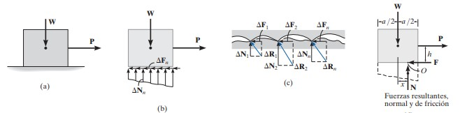
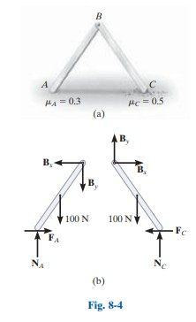
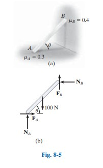
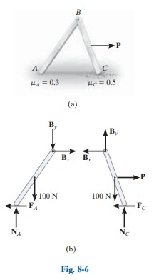
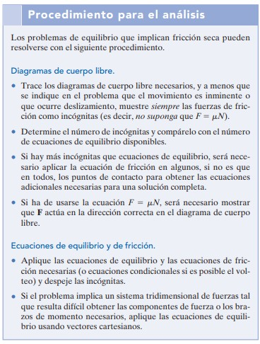
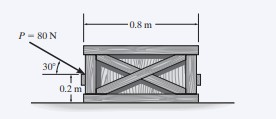

Unidad 7: Fricción
Fenómenos de fricción, fricción seca y aplicaciones en plano inclinado.
Contenido de la unidad
7.1 Fenómenos de fricción
La fricción es la fuerza tangencial que se opone al deslizamiento relativo entre superficies en contacto. Su magnitud depende de la interacción entre las superficies y, en modelos ideales, del valor de la normal.
En estática, la fricción puede ajustar su valor hasta cierto límite para mantener el equilibrio. Cuando se supera el límite, aparece el deslizamiento.
La fricción es una fuerza que resiste el movimiento de dos superficies en contacto que se deslizan relativamente entre sí. Esta fuerza actúa siempre tangencialmente a la superficie en los puntos de contacto y está dirigida en sentido opuesto al movimiento posible o existente entre las superficies.

Teoría de la fricción seca. La teoría de la fricción seca puede explicarse si se consideran los efectos que ocasiona jalar horizontalmente un bloque de peso uniforme W que descansa sobre una superficie horizontal rugosa que es no rígida o deformable, figura 8-1a. Sin embargo, la parte superior del bloque se puede considerar rígida. Como se muestra en el diagrama de cuerpo libre del bloque, figura 8-1b, el piso ejerce una distribución dispar de fuerza normal ΔNn y de fuerza de fricción ΔFn a lo largo de la superficie de contacto. Por equilibrio, las fuerzas normales deben actuar hacia arriba para equilibrar el peso W del bloque, y las fuerzas de fricción deben actuar hacia la izquierda para evitar que la fuerza aplicada P mueva el bloque hacia la derecha. Un examen preciso de las superficies en contacto entre el piso y el bloque revela cómo se desarrollan esas fuerzas de fricción y normales, figura 8-1c. Puede verse que existen muchas irregularidades microscópicas entre las dos superficies y, como resultado, se desarrollan fuerzas reactivas ΔRn en cada uno de los puntos de contacto. Como se muestra, cada fuerza reactiva contribuye con una componente de fricción ΔFn y con una componente normal ΔN.
Equilibrio. El efecto de las cargas distribuidas normal y de fricción está indicado por sus resultantes N y F, las cuales se muestran en el diagrama de cuerpo libre, figura 8-1d. Observe que N actúa a una distancia x a la derecha de la línea de acción de W, figura 8-1d. Esta ubicación, que coincide con el centroide o centro geométrico de la distribución de fuerza normal en la figura 8-1b, es necesaria para equilibrar el “efecto de volteo” causado por P. Por ejemplo, si P se aplica a una altura h sobre la superficie, figura 8-1d, entonces el equilibrio de momento con respecto al punto O se satisface si Wx = Ph o x = Ph/W.

Movimiento inminente. En los casos donde las superficies de contacto son “resbalosas”, la fuerza F de fricción puede no ser lo suficientemente grande como para equilibrar a P y, en consecuencia, el bloque tenderá a resbalar antes que a volcarse. En otras palabras, al incrementarse lentamente P, F aumenta de manera correspondiente hasta que alcanza un cierto valor máximo Fs, llamado fuerza límite de fricción estática, figura 8-1e. Cuando se alcanza este valor, el bloque está en equilibrio inestable ya que cualquier incremento adicional en P ocasionará que el bloque se mueva. De manera experimental, se ha determinado que la fuerza límite de fricción estática Fs es directamente proporcional a la fuerza normal resultante N. Expresado en forma matemática:

Donde la constante de proporcionalidad, μs se llama coeficiente de fricción estática. Así, cuando el bloque está a punto de deslizarse, la fuerza normal N y la fuerza de fricción Fs se combinan para crear una resultante Rs, figura 8-1e. El ángulo φs que forma Rs con N se llama ángulo de fricción estática. A partir de la figura,

En la tabla 8-1 se proporcionan los valores típicos de μs. Observe que estos valores pueden variar ya que los ensayos experimentales se hicieron bajo condiciones variables de rugosidad y limpieza de las superficies en contacto. Por lo tanto, en las aplicaciones es importante tener cuidado y buen juicio al seleccionar un coeficiente de fricción para un conjunto dado de condiciones. Cuando se requiere un cálculo más preciso de Fs, el coeficiente de fricción debe determinarse directamente por medio de un experimento que implique los dos materiales que se van a usar.


Movimiento. Si la magnitud de P que actúa sobre el bloque se incrementa de manera que resulta mayor que Fs, la fuerza de fricción en las superficies de contacto cae a un valor menor Fk, llamada fuerza de fricción cinética. El bloque comenzará a deslizarse con rapidez creciente, figura 8-2a. Cuando ocurre esto, el bloque se “montará” en la parte superior de estos picos en los puntos de contacto, como se muestra en la figura 8-2b. El rompimiento continuo de la superficie es el mecanismo dominante que crea fricción cinética.
Los experimentos con bloques deslizantes indican que la magnitud de la fuerza de fricción cinética es directamente proporcional a la magnitud de la fuerza normal resultante. Esto se puede expresar en forma matemática como:

Aquí la constante de proporcionalidad, μk, se llama coeficiente de fricción cinética. Los valores típicos para μk son aproximadamente 25 por ciento más pequeños que los enunciados en la tabla 8-1 para μs.
Como se muestra en la figura 8-2a, en este caso, la fuerza resultante en la superficie de contacto tiene una línea de acción definida por φk. Este ángulo se denomina ángulo de fricción cinética, donde:

Los efectos anteriores referentes a la fricción pueden resumirse con la referencia a la gráfica de la figura 8-3, el cual muestra la variación de la fuerza de fricción F contra la carga aplicada P. Aquí, la fuerza de fricción se clasifica de tres formas diferentes:
- F es una fuerza de fricción estática si se mantiene el equilibrio.
- F es una fuerza de fricción estática limitante Fs, cuando alcanza un valor máximo necesario para mantener el equilibrio.
- F se llama fuerza de fricción cinética Fk cuando ocurre el deslizamiento en la superficie de contacto.
Observe también en la gráfica que para valores muy grandes de P o para velocidades altas, los efectos aerodinámicos causarán que Fk así como μk empiecen a disminuir.
Características de la fricción seca. Como resultado de experimentos que son pertinentes para el análisis anterior, podemos establecer las siguientes reglas aplicables a cuerpos sometidos a fricción seca.
- La fuerza de fricción actúa tangencialmente a las superficies de contacto en una dirección opuesta al movimiento o a la tendencia al movimiento de una superficie con respecto a otra.
- La fuerza de fricción estática máxima Fs que puede desarrollarse es independiente del área de contacto, siempre que la presión normal no sea ni muy baja ni muy grande para deformar o aplastar severamente las superficies de contacto de los cuerpos.
- Por lo general, la fuerza de fricción estática máxima es mayor que la fuerza de fricción cinética para cualquiera de las dos superficies de contacto. Sin embargo, si uno de los cuerpos se está moviendo a velocidad muy baja sobre la superficie de otro cuerpo, Fk se vuelve aproximadamente igual a Fs, es decir, μs ≈ μk.
- Cuando en la superficie de contacto el deslizamiento está a punto de ocurrir, la fuerza de fricción estática máxima es proporcional a la fuerza normal, de manera que Fs = μsN.
- Cuando está ocurriendo el deslizamiento en la superficie de contacto, la fuerza de fricción cinética es proporcional a la fuerza normal, de manera que Fk = μkN.
7.2 Fricción seca
La fricción es una fuerza que resiste el movimiento de dos superficies en contacto que se deslizan relativamente entre sí. Esta fuerza actúa siempre tangencialmente a la superficie en los puntos de contacto y está dirigida en sentido opuesto al movimiento posible o existente entre las superficies.

Teoría de la fricción seca. La teoría de la fricción seca puede explicarse si se consideran los efectos que ocasiona jalar horizontalmente un bloque de peso uniforme W que descansa sobre una superficie horizontal rugosa que es no rígida o deformable, figura 8-1a. Sin embargo, la parte superior del bloque se puede considerar rígida. Como se muestra en el diagrama de cuerpo libre del bloque, figura 8-1b, el piso ejerce una distribución dispar de fuerza normal ΔNn y de fuerza de fricción ΔFn a lo largo de la superficie de contacto. Por equilibrio, las fuerzas normales deben actuar hacia arriba para equilibrar el peso W del bloque, y las fuerzas de fricción deben actuar hacia la izquierda para evitar que la fuerza aplicada P mueva el bloque hacia la derecha. Un examen preciso de las superficies en contacto entre el piso y el bloque revela cómo se desarrollan esas fuerzas de fricción y normales, figura 8-1c. Puede verse que existen muchas irregularidades microscópicas entre las dos superficies y, como resultado, se desarrollan fuerzas reactivas ΔRn en cada uno de los puntos de contacto. Como se muestra, cada fuerza reactiva contribuye con una componente de fricción ΔFn y con una componente normal ΔNn.
Equilibrio. El efecto de las cargas distribuidas normal y de fricción está indicado por sus resultantes N y F, las cuales se muestran en el diagrama de cuerpo libre, figura 8-1d. Observe que N actúa a una distancia x a la derecha de la línea de acción de W, figura 8-1d. Esta ubicación, que coincide con el centroide o centro geométrico de la distribución de fuerza normal en la figura 8-1b, es necesaria para equilibrar el “efecto de volteo” causado por P. Por ejemplo, si P se aplica a una altura h sobre la superficie, figura 8-1d, entonces el equilibrio de momento con respecto al punto O se satisface si Wx = Ph o x = Ph/W.
Tipos de problemas de fricción. En general, hay tres tipos de problemas mecánicos que implican la fricción seca. Estos problemas pueden clasificarse fácilmente una vez que se trazan los diagramas de cuerpo libre y que se identifica el número total de incógnitas y se compara con el número total de ecuaciones de equilibrio disponibles.
Movimiento inminente no evidente. Los problemas de este tipo son estrictamente problemas de equilibrio que requieren que el número total de incógnitas sea igual al número total de ecuaciones de equilibrio disponibles. Sin embargo, una vez determinadas las fuerzas de fricción por la solución, sus valores numéricos deben revisarse para garantizar que satisfacen la desigualdad F ≤ μsN; de otra manera, ocurrirá el deslizamiento y el cuerpo no permanecerá en equilibrio. En la figura 8-4a, se muestra un problema de este tipo. Aquí debemos determinar las fuerzas de fricción en A y C para verificar si se puede mantener la posición de equilibrio del bastidor de dos elementos. Si las barras son uniformes y tienen pesos conocidos de 100 N cada una, entonces los diagramas de cuerpo libre son como se muestra en la figura 8-4b. Se tienen seis componentes de fuerza que pueden determinarse estrictamente a partir de las seis ecuaciones de equilibrio (tres para cada elemento). Una vez que se determinan FA, NA, FC y NC, las barras permanecerán en equilibrio si se cumple que FA ≤ 0.3NA y FC ≤ 0.5NC.

Movimiento inminente en todos los puntos de contacto. En este caso, el número total de incógnitas será igual al número total de ecuaciones disponibles más el número total de ecuaciones de fricción, F = μsN. Cuando el movimiento es inminente en los puntos de contacto, entonces Fs = μsN; mientras que si el cuerpo se desliza, entonces Fk = μkN. Por ejemplo, considere el problema de encontrar el ángulo más pequeño bajo el cual la barra de 100 N que se muestra en la figura 8-5a puede recargarse contra la pared sin que se deslice. El diagrama de cuerpo libre se muestra en la figura 8-5b. Aquí las cinco incógnitas se determinan a partir de las tres ecuaciones de equilibrio y de las dos ecuaciones de fricción que se aplican en ambos puntos de contacto, de manera que FA = 0.3NA y FB = 0.4NB.


Movimiento inminente en algunos puntos de contacto. Aquí el número de incógnitas será menor que el de ecuaciones de equilibrio disponibles, más el número total de ecuaciones de fricción o ecuaciones condicionales para el volteo. Como resultado, existirán varias posibilidades para que se produzca el movimiento o el movimiento inminente y el problema implicará determinar qué tipo de movimiento ocurrirá realmente. Por ejemplo, considere el bastidor de dos elementos que se muestra en la figura 8-6a. En este problema queremos determinar la fuerza horizontal P necesaria para ocasionar el movimiento. Si cada elemento tiene un peso de 100 N, entonces los diagramas de cuerpo libre son como se muestran en la figura 8-6b. Se tienen siete incógnitas. Para encontrar una solución única debemos satisfacer las seis ecuaciones de equilibrio (tres para cada elemento) y sólo una de dos posibles ecuaciones de fricción estática. Esto significa que conforme P aumente causará deslizamiento en A y ningún deslizamiento en C, de manera que FA = 0.3NA y FC ≤ 0.5NC; o bien ocurre deslizamiento en C y ningún deslizamiento en A, en cuyo caso FC = 0.5NC y FA ≤ 0.3NA. La situación real puede determinarse al calcular P en cada caso y al seleccionar después el caso para el cual P es más pequeña. Si en ambos casos se calcula el mismo valor para P, lo que en la práctica sería altamente improbable, entonces el deslizamiento ocurre simultáneamente en ambos puntos; es decir, las siete incógnitas satisfacen ocho ecuaciones.

Ejemplo. El embalaje uniforme que se muestra en la figura 8-7a tiene una masa de 20 kg. Si una fuerza P = 80 N se aplica al embalaje, determine si éste permanece en equilibrio. El coeficiente de fricción estática es μs = 0.3.

Diagrama de cuerpo libre. Como se muestra en la figura 8-7b, la fuerza normal resultante NC debe actuar a una distancia x de la línea central del embalaje para contrarrestar el efecto de volteo causado por P. Hay tres incógnitas, F, NC y x, que pueden determinarse estrictamente a partir de las tres ecuaciones de equilibrio.
7.3 Plano inclinado
En un plano inclinado, las componentes del peso actúan en dirección perpendicular y paralela al plano. La fricción se opone al posible movimiento relativo.
Video Unidad 7 — Si no carga, ábrelo aquí.